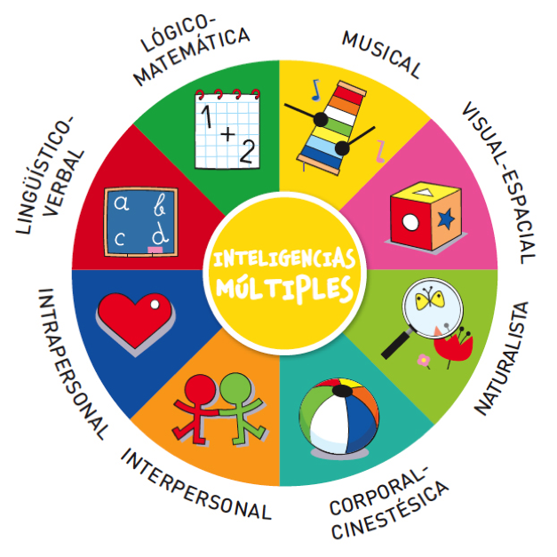
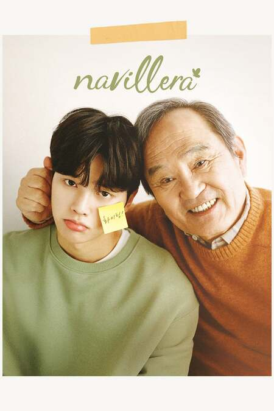
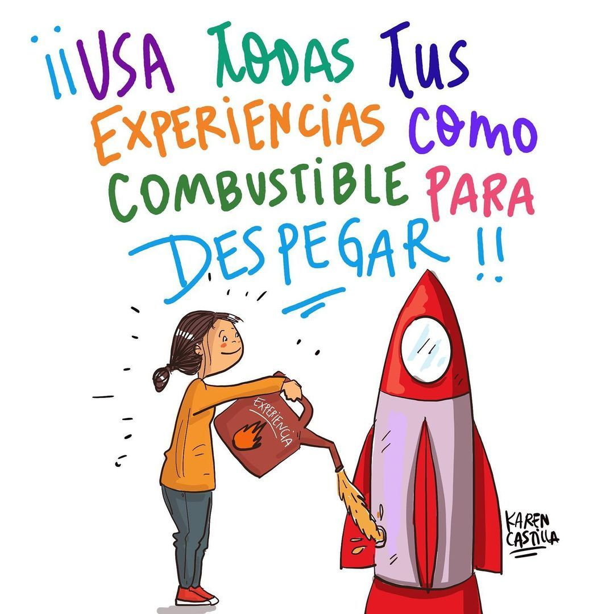
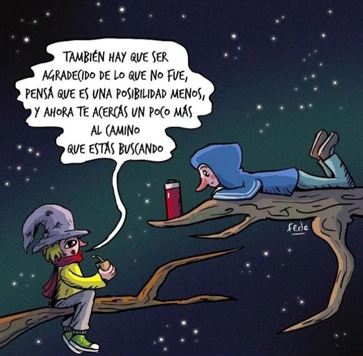

Inteligencia Multiple
Tradionalmente la inteligencia se ha visto como la única habilidad. Gardner postula que con la inteligencia no es algo unitario, sino que el concepto "inteligencia" agrupa diferentes capacidades especifícas. Esto es, un conjunto de inteligencias múltiples, distintas, diferentes entre si e independientes pero interrelacionadas. Cada persona posse 8 inteligencias. Las inteligencias trabajan conjuntamene de manera compleja. La mayor parte de las personas pueden desarrollar cada inteligencia hasta un nivel adecuado de competencia. Este modelo de funcionamiento cognitivo implicaría que una persona podría ser muy habilidosa en un campo concreto si se potencia y entrena
Dones y Sueños
La orientacion vocaional propiamente dicha ha surgido hacia mediados del siglo pasado. Anteriormente, poco lugar había para elegir en base a nuestro intereses, y la elección se basaba en las capacidades o en profeciones y/u oficios que se transmitían de generación en generación. Recientemente empezamos a escuchar que las persona, en la edad adulta comienza a dar-se el lugar a concretar sus sueños, como si no hubiera un tiempo anterior para hacerlo. ¿Es así? ¿Podríamos harce algo para que los sueñso o reales intereses no queden postergados? Desde nuestra práctica, dentro de las posibilidades el contexto de cada sujeto, insistimos en la importancia de las actividades que generan disfrute, que pueden ser un hobbie en un momento, pero se pueden transformar en un proyecto laboral o profecional. no todos/as tenemos las mismas capacidades pero hay muchas que pueden desarrollarse se les damos lugar.
Primeras experiencias laborales
La primera experiencia laboral tiene mucho valor. Aunque en la mayoría de los casos este primer empleo no esté vinculado con la carrera que se estudia, es de todos modos muy valioso, para reconocer las propias fortalezas y debilidades, desarrollar responsabilidad, etc. En estos contactos iniciales se adquieren hábitos y competencias propios de la cultura del trabajo. Call centers, puesto en ventas y atención al cliente, son los sectores que moyoritariamente ofrecen primeras oportunidades. En ocaciones, la incursión en el mundo del trabajo ayuda no solo a reunir experiencia, sino también a definir o reencauzar la elección vocacional inicial, que no siempre está vinvulada con el horizonte laboral real.
Volver a elegir
Muchas veces nos encontramos con el prejuicio de que la primera elección vocacional u ocupacional tiene que ser la correcta y para siempre. Si pensamos a la orientación como un proceso que dura toda la vida, es esperable que haya cambios en el camino, ya sea por las expectativas o que algo deje de interesarnos. Entonces el desafío es dejar de pensarlo como un error y sentir frustración y transformarlo en una instancia de aprendizaje y la apertura de nuevas opotunidades/posibilidades.
¿que son los mandatos
Los mandatos familiares son aquellos mensajes implícitos o explicitos que se transmiten de generación en generación. A veces no nos preguntamos porque hacemos o decimos determinadas cosas. Estos mandatos pueden limitarnos o dejarnos elegir en libertad. Son difíciles de detectar y decambiar, dado que muchas veces son un signo de petenencia a la familia. Imponer nuestro deseo a veces tiene in costo muy alto pero no hacerlo, tambien... Poder cuestionar y descubrir cuales son nuestros deseos nos permite la posibilidad de decidir si nos identificamos con estos mandatos o estamos dispuestos a modificarlos.
Trabajo en equipo
Cuando trabajamos en equipo potenciamos nuestras capacidades. La fortalezas y debilidades de cada participante se ponen de minifiesto completamentandose. Es importante tener registro de nuestras fortalezas y debilidades, para potenciarlas o delegarlas y en combinación con otros/as lograr un mejor resultado